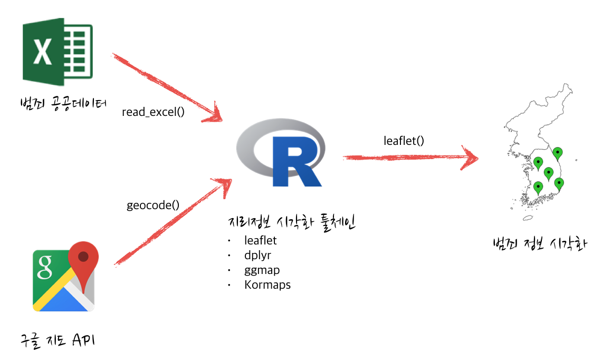

데이터 과학
생활안전 - 보호관찰소와 범죄
학습 목표
- 보호관찰소 위치정보를 시각화한다.
- 전국 범죄를 지리정보로 시각화한다.
1. 생활안전 - 보호관찰소와 범죄

범죄발생에 대한 공공데이터를 확보한다. 공공데이터 포털에 올라가 있는 범죄데이터를 기준으로 작업을 시작한다. 공공데이터와 함께 보호관찰소 및 지소 정보를 법무부 범죄예방정책국 웹사이트에서 정리하여 구글 지도 geocode API 를 사용하여 위도와 경도 정보를 붙여 자바스크립트 라이브러리 leafelt을 활용하여 R언어로 작성한다.
범죄데이터는 공공데이터 포털과 국가통계포털(KOSIS)에서 이용가능한 최신 데이터를 활용한다.
전국적으로 2014년 1,778,966 건 발생했다. 또한, 강력범죄, 절도범죄, 폭력범죄, 지능범죄 등 총 15개 범죄가 유형별로 있으며, 각 범죄별로 내부를 뜯어보면 강력범죄의 경우, 살인기수, 강도, 강간, 유사강간, 강제추행, 방화 등으로 쪼개진다. 이 자체만으로도 대한민국 국민은 누구나 범죄에 노출되어 있음을 실감하게 된다.
2. 보호관찰소 지리정보 시각화
보호관찰소 및 지소가 수도권 및 충청도 지역에 집중 배치되어 있는 것을 한눈에 확인할 수 있다. 또한, 지역을 확대하게 되면 사용자 거주지에 얼마나 가까이 있는지도 확인이 가능하다.
보호관찰소 및 지소가 위치한 자세한 정보 확인은 이미지 클릭
2.1. 보호관찰소 지리정보 시각화 코드
geocode 함수를 이용하여 보호관찰소 및 지소가 위치한 곳의 위도경도정보를 받아온다. 공공데이터의 위치정보는 간단히 “서울시”, “성남시”, “속초시” 등 간략한 정보만 나와있어, 이를 geocode에 넣게 되면 해당 도시의 대표 위도와 경도 정보가 반환된다.
보호관찰소 지소의 경우 전체주소를 넣는다. 예를 들어, “논산지소”의 경우 “충청남도 논산시 시민로294길 27”
주소를 geocode의 인자값으로 밀어 넣는다.
주소정보를 넣어 위도경도 정보를 bind_cols 함수로 합치게 되면 leaflet에 범례도 추가하고, 표식도 추가하고, 표식이 너무 많은 경우 clusterOptions = markerClusterOptions() 을 추가한다.
library(readxl); library(ggmap); library(dplyr); library(leaflet)
##===========================================================
## 범죄데이터 가져오기
##===========================================================
# 보호관찰소 위치
probation.rd <- read_excel("crime/data/범죄발생-2011-2014-지역.xlsx", sheet="merge")
##===========================================================
## 위도경도 정보
##===========================================================
# 보호관찰소
probation.rd.lonlat <- geocode(probation.rd$city)
crime.city.office <- bind_cols(probation.rd, probation.rd.lonlat)
probation.office
##===========================================================
## 지리정보 시각화
##===========================================================
# 최종 (군집 표시)
probation.office.html <-
leaflet(data = probation.office) %>% addTiles() %>%
addMarkers(~lon, ~lat, popup = ~as.character(city), clusterOptions = markerClusterOptions()) %>%
addLegend("bottomright", colors= "#ffa500", labels="위치", title="보호관찰소 및 지소")
##===========================================================
## HTML 파일 내보내기
##===========================================================
# 최종 (군집 표시)
library(htmlwidgets)
saveWidget(widget=probation.office.html,file="probation_office.html")